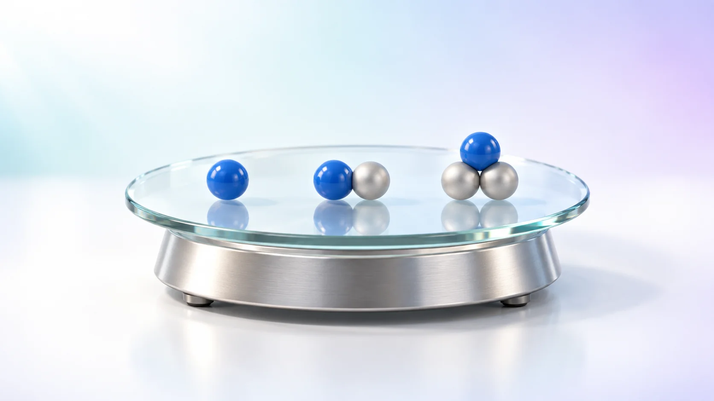
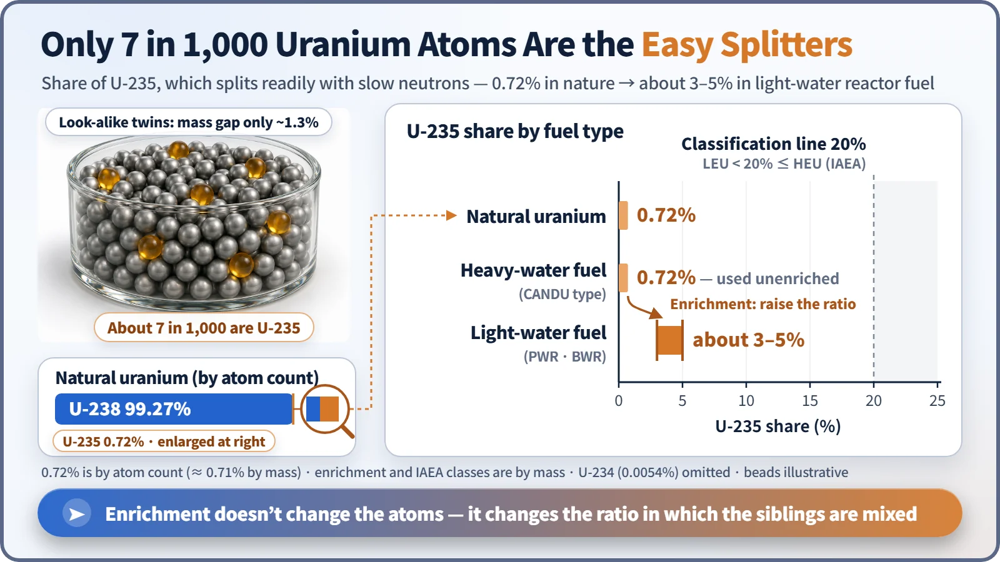
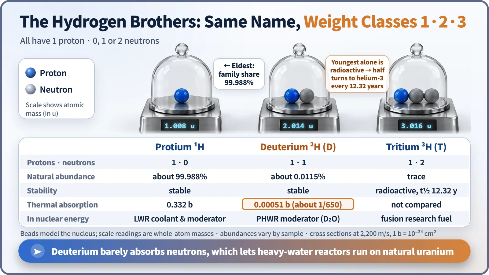

Nuclear & Radiation Basics · 005
Same Face, Different Weight Class — Why Isotopes of One Element Behave Differently
Same protons, different neutrons: isotopes look alike to chemistry but behave very differently inside a reactor.

Isotopes are atoms of the same element with the same number of protons but different numbers of neutrons. Because chemistry is the electrons' business, isotopes behave almost identically in chemical reactions; because nuclear reactions depend on the whole proton–neutron combination, their nuclear behavior can be completely different. [1]
A family that splits at the bathroom scale
Imagine three brothers: same surname, same face, impossible for the neighbors to tell apart. On a bathroom scale, though, the numbers are very different, and a personality test shows one of them is unusually twitchy. The atomic world has families like this: isotopes, atoms of the same element with the same number of protons but different numbers of neutrons, and so different weights. The name comes from Greek for "same place," because they share one box of the periodic table.
Protons give the surname, neutrons set the weight
The element's surname is set by the number of protons: one proton is always hydrogen, 92 is always uranium. Neutrons change the weight. The total of protons and neutrons is the mass number, and each extra neutron raises it by one, which is why we tell the brothers apart with names like uranium-235 and uranium-238.
Why they look alike: chemistry is the electrons' business
A chemical reaction is all about the electrons on the outside of the atom. An atom has as many electrons as protons, so isotopes share the same electron arrangement and form almost exactly the same compounds.
"Almost," because a different weight makes atoms move slightly differently. For light hydrogen the effect shows: heavy water, made with the heavy hydrogen isotope, is about 11% heavier than ordinary water and freezes at 3.8 °C. For heavy uranium the isotopes differ in mass by only a little over 1%, so chemically they are practically indistinguishable. [2]
Why their personalities differ: nuclear reactions happen inside the nucleus
A nucleus's properties depend on the whole combination of protons and neutrons, so one or two neutrons can change whether it is stable, how readily it captures neutrons and whether it can split. Uranium-235 splits when hit by a single slow neutron. Uranium-238, with three more neutrons, hardly splits with slow neutrons; only very fast neutrons get some of it to react. More neutrons does not mean "stronger." [3]

Natural uranium is 99.27% uranium-238; the easily split uranium-235 is only 0.72%, about 7 atoms in every 1,000. In light-water reactors, cooled with ordinary water, the hydrogen absorbs some neutrons, so a chain reaction is hard to sustain at that ratio. The uranium-235 share is therefore raised to about 3 to 5%: enrichment. It doesn't make the atoms stronger; it only changes the ratio in which the isotopes are mixed, and since chemistry can't tell them apart, they are sorted physically by their weight difference. The IAEA classifies anything below 20% as low-enriched uranium, and power reactor fuel falls entirely within that range. [4]
The hydrogen brothers: the only family with separate names
All three hydrogen isotopes have one proton, with zero, one and two neutrons, and each has its own name.

| Protium ¹H | Deuterium ²H (D) | Tritium ³H (T) | |
|---|---|---|---|
| Protons · neutrons | 1 · 0 | 1 · 1 | 1 · 2 |
| Natural abundance | about 99.988% | about 0.0115% | trace |
| Stability | stable | stable | radioactive, half-life 12.32 years |
| Thermal neutron absorption | 0.332 b | 0.00051 b (about 1/650) | not compared |
Protium makes up about 99.988% of natural hydrogen. Deuterium weighs about twice as much and is only about 0.0115% of hydrogen. Tritium, about three times as heavy, is the only radioactive one: half of it turns into helium-3 every 12.32 years. [5]
Ordinary hydrogen absorbs neutrons a little, but deuterium absorbs only about 1/650 as much. So a heavy-water reactor, which uses heavy water to slow neutrons down, loses fewer neutrons and can run on natural, unenriched uranium, while a light-water reactor needs enriched fuel. One isotope's difference in "appetite" split reactor design into two paths.
"Isotope means radioactive, right?"
No. Protium and deuterium are stable, and most elements in nature have stable isotopes. Radioactive isotopes are only some of them.
Key takeaways
Isotopes share a surname, so their chemistry looks alike, but their weight and nuclear personality differ. What fuel a nuclear plant uses, how much it is enriched, and why some reactors use heavy water all start from those differences.